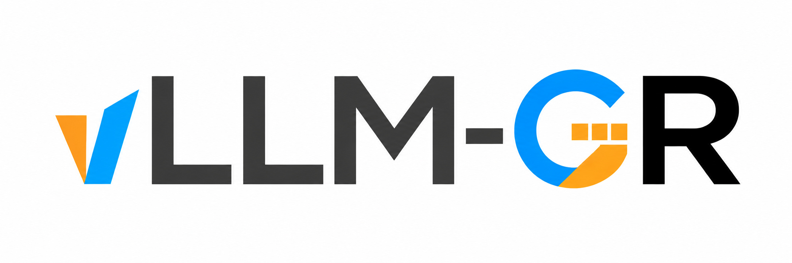
关于 vLLM-GR
今天，我们正式发布 vLLM-GR。这是一个构建于 vLLM 之上的开源推理与服务框架，面向生成式推荐模型。
以视频信息流为例。给定观看者的历史记录，OneRec 等模型可以生成一个语义 ID（Semantic ID，SID），表示观看者接下来可能观看的视频。为了组成信息流，应用需要获得一组候选项。vLLM-GR 在 vLLM 的模型执行能力和分页键值（KV）缓存之上加入束搜索（beam search），从而在一次请求中探索多个候选 ID。
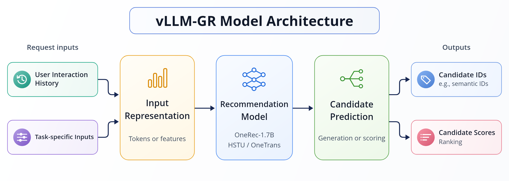
上图展示了推荐模型如何生成物品 ID，或为给定候选项打分。下方 OneRec-1.7B 示例沿着生成路径展开：从观看者历史记录出发，最终得到 128 个候选 SID。
为什么需要 vLLM-GR？
推荐服务必须在单次请求的延迟预算内，把一段很长的交互历史转化为一组候选项。生成每个物品 ID 可能只需几个 token，但引擎仍需探索许多路径，并返回应用实际能够提供的物品。
- 在 vLLM 技术栈上运行推荐模型。 团队将推荐模型从离线评估迁移到 NVIDIA GPU 和昇腾 NPU 上的在线服务时，可以复用 vLLM 的模型执行、调度和分页 KV 缓存。
- 降低宽候选搜索的成本。 不同候选路径共享已缓存的用户历史。引擎在一次请求中连续执行多步束搜索，并在加速器上选择候选项，从而减少重复计算以及每一步与主机之间的协调。
- 让推荐结果与物品目录保持一致。 目录约束会引导搜索生成能够映射到真实物品的 ID。模型和目录更新机制使团队能在模型与库存变化时及时刷新服务的推荐内容。
架构内部
vLLM-GR 把推荐搜索直接构建到 vLLM 引擎中。vLLM 提供调度器、模型执行和分页 KV 缓存；vLLM-GR 则加入覆盖整个搜索过程的束会话（beam session），并跟踪候选路径的分支方式。
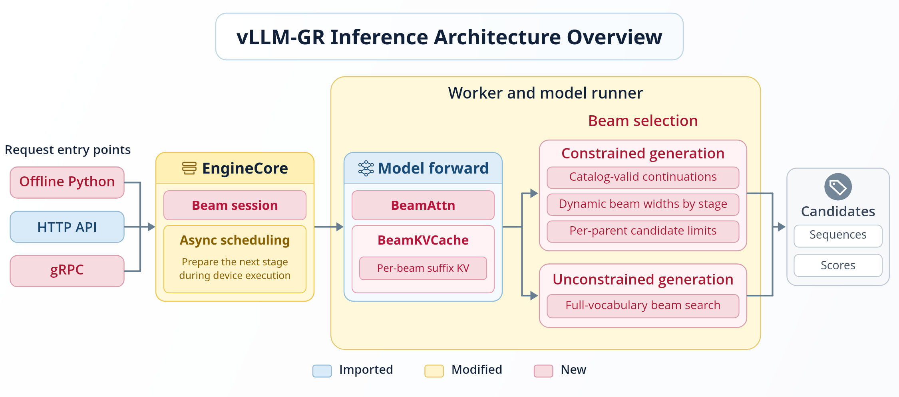
EngineCore 负责束会话从准入到完成的整个生命周期。调度器把预填充和解码阶段分派给工作进程。每个阶段中，模型运行器为下一个 token 打分，束选择则记录每条保留路径的分数和父路径。下一轮解码根据这些父索引读取正确的 KV 状态。
主要特性
- 简单。 可以通过离线 Python 接口、兼容 OpenAI 的 HTTP 接口或 gRPC 提交一次完整束搜索。引擎自行执行解码循环，并在单个响应中返回候选序列与分数。
- 灵活。 可以搜索整个词表，也可以把生成范围限制为物品目录中的语义 ID。逐阶段的束宽和逐父路径的候选数限制，使服务能够探索比最终返回结果更多的部分 ID。
- 高性能。 多个束共享提示词 KV，无需为每个候选项复制观看者历史。加速器执行当前阶段时，主机同时准备下一阶段，从而缩短解码步骤之间的等待时间。
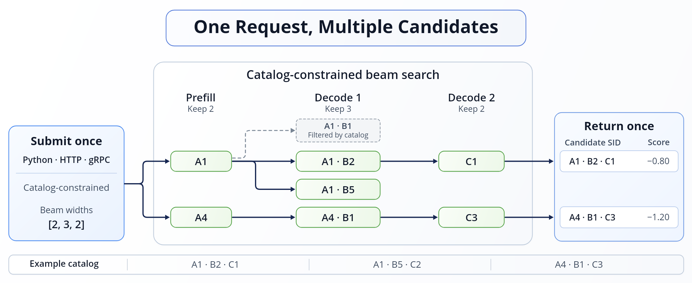
一次请求使用 2 → 3 → 2 的束宽返回两个候选项。由于没有物品以 A1 · B1 为前缀，目录会过滤掉该路径。全词表搜索会跳过此过滤。图中的 SID 和分数仅作说明。
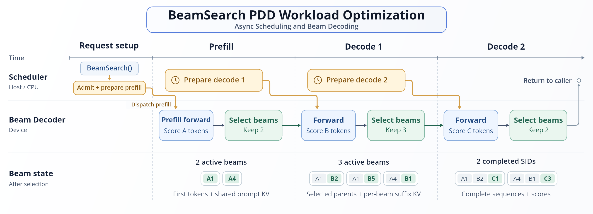
在预填充—解码—解码（prefill–decode–decode，PDD）流水线中，调度器接收一个 BeamSearch() 请求，并把预填充阶段派发给工作进程。预填充为第一个 SID 组成部分打分，同时主机准备解码 1；执行解码 1 时，主机准备解码 2。第二轮解码继承已选父路径的后缀 KV，并完成两个 SID。绿色表示每个阶段选中的组成部分。
性能评估
基准测试采用 P99 延迟，展示束宽和批量大小如何影响生成式推荐的尾延迟。两张总览图将输入长度固定为 1,024 个 token，在 4 款 NVIDIA GPU 和 2 款昇腾 NPU 上，比较束宽 256 与 128、批量大小 1、4、8 的表现。这些图汇总了多组独立测试，各组采用不同的计时定义、样本数量和后端设置。
在 RTX PRO 6000 上，vLLM-GR、SGLang Beam 和 NVIDIA SID-GR 均以 BF16 运行 OneRec-1.7B，使用相同的合成输入生成 3 个 token，并关闭目录约束。经过 3 次预热后，每个数据点统计 48 个计时批次的整批 P99。计时包含把候选 ID 和分数返回主机的时间，但不包含 HTTP。以 W 表示束宽、K 表示候选池大小时，vLLM-GR 和 NVIDIA SID-GR 均使用 K = W；SGLang Beam 使用其原生的 2W 候选池。
在昇腾 A2 和 A5 上，vLLM-GR 与 xLLM 使用目录约束表。基准摘要没有记录 SGLang 的约束设置。L20 的记录样本数根据配置不同，在 100 到 1,000 个计时批次之间。现有摘要没有给出这些比较使用的确切后端版本，也没有给出 RTX PRO 6000 之外测试的预热次数。
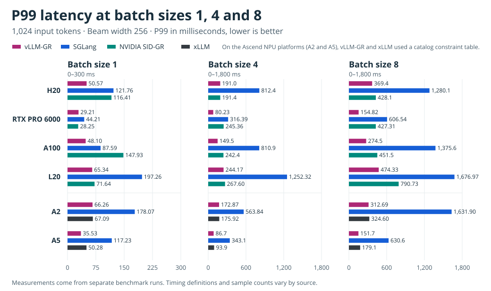
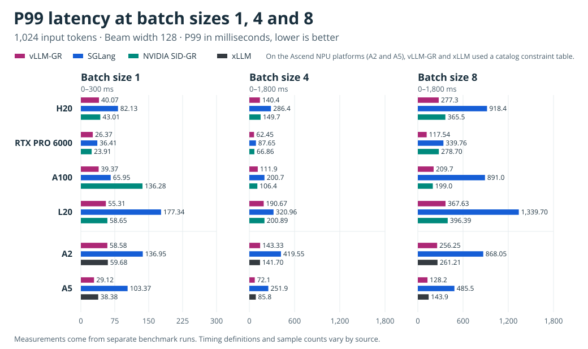
束宽为 256 时，在所有 6 款加速器上，vLLM-GR 都在批量大小 4 和 8 时取得图中各后端最低的 P99。H20 上，当束宽为 256、批量大小为 8 时，vLLM-GR、SGLang 和 NVIDIA SID-GR 的 P99 分别为 369.4 毫秒、1,280.1 毫秒和 428.1 毫秒。
在 RTX PRO 6000 上，束宽 256、批量大小 1 时，NVIDIA SID-GR 报告 28.25 毫秒，vLLM-GR 为 29.21 毫秒。A2 上，在相同束宽、批量大小 8 且两者均启用目录约束时，vLLM-GR 和 xLLM 分别为 312.69 毫秒和 324.60 毫秒。束宽为 128 时，最低延迟后端会随加速器和批量大小而变化。
展开下面的硬件部分，可以查看更大束宽与输入长度范围内的延迟变化。各加速器和批量大小的测试范围并不完全相同。
H20 · B=1、B=4 和 B=8
束宽为 256、批量大小为 4 时，vLLM-GR 和 NVIDIA SID-GR 的 P99 都约为 191 毫秒；批量大小为 8 时，两者分别为 369.4 毫秒和 428.1 毫秒。
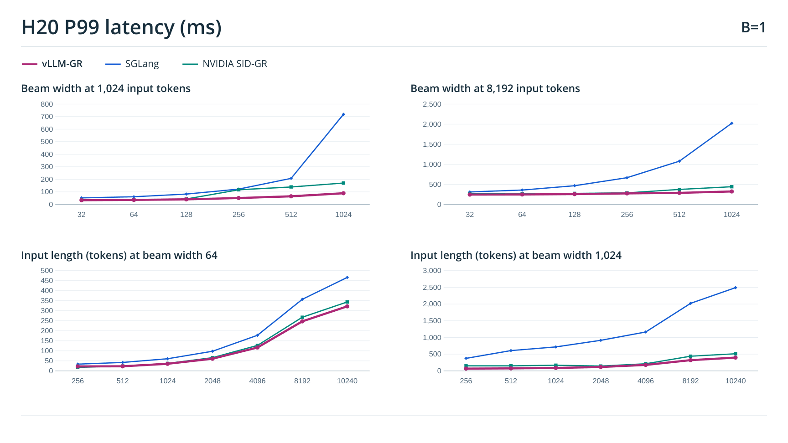
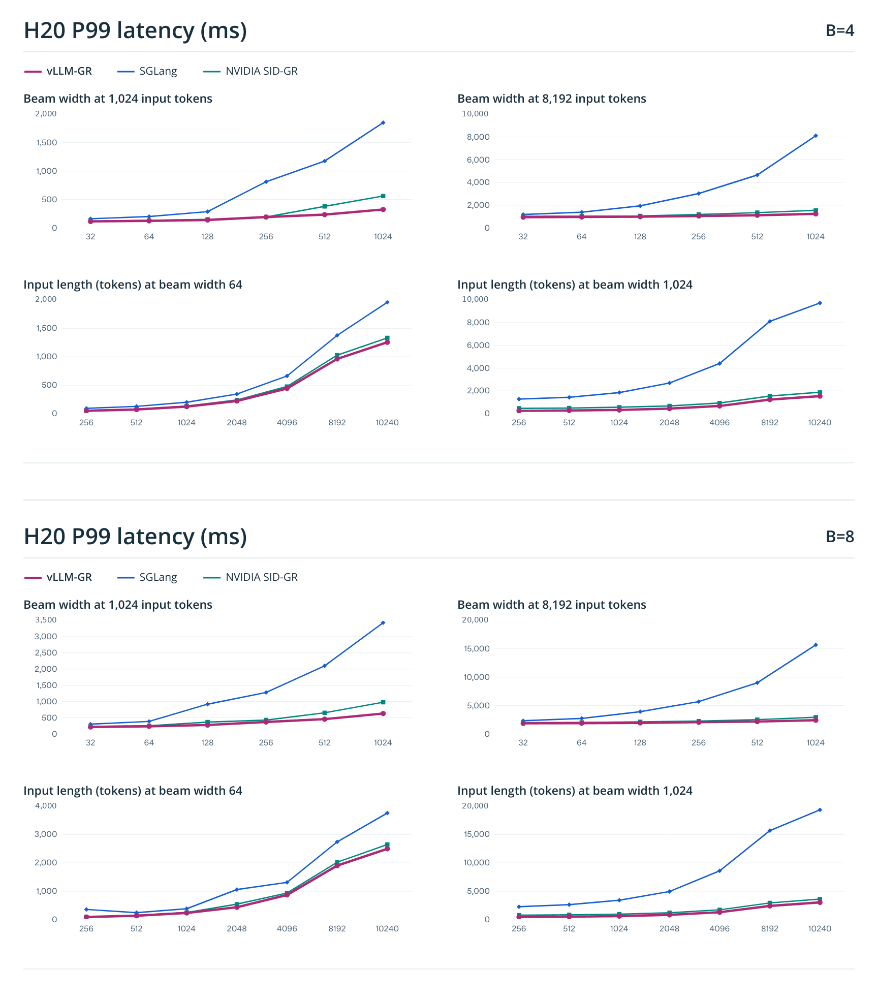
RTX PRO 6000 · B=1、B=4 和 B=8
在两种总览束宽下，NVIDIA SID-GR 在批量大小 1 时取得最低 P99；vLLM-GR 在批量大小 4 和 8 时取得最低 P99。
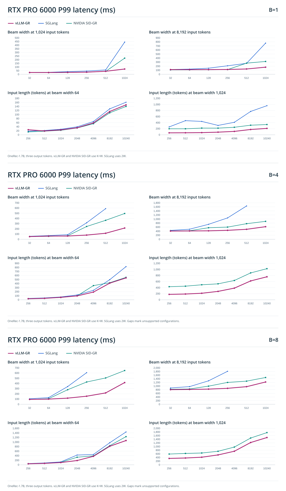
A100 · B=1、B=4 和 B=8
批量大小为 8、束宽为 128 时，NVIDIA SID-GR 为 199.0 毫秒，vLLM-GR 为 209.7 毫秒；束宽为 256 时，vLLM-GR 为 274.5 毫秒，NVIDIA SID-GR 为 451.5 毫秒。
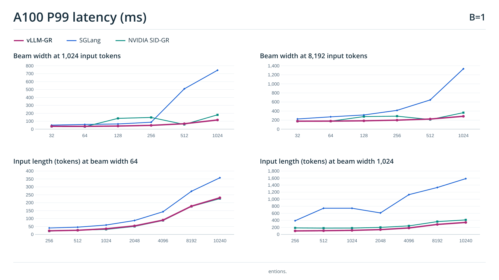
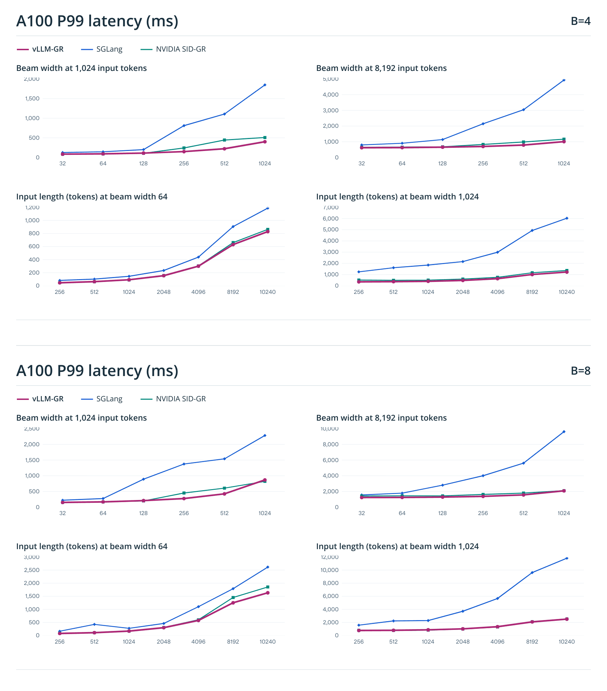
L20 · B=1、B=4 和 B=8
批量大小为 8、束宽为 256 时，vLLM-GR 的 P99 为 474.3 毫秒，其次是 NVIDIA SID-GR 的 790.7 毫秒。
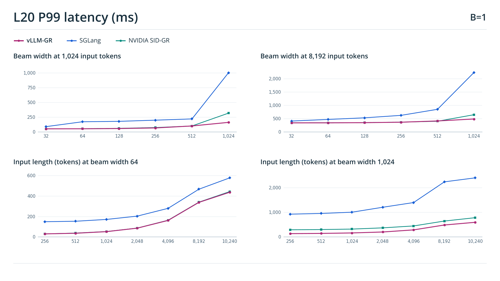
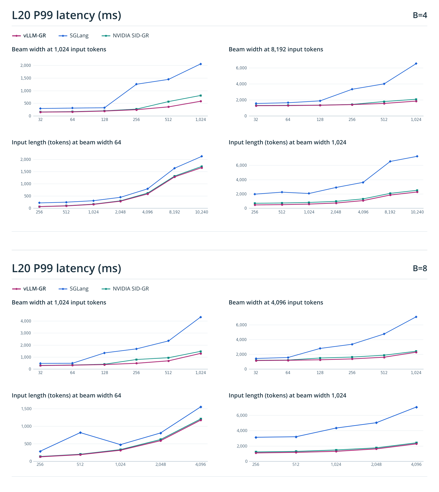
A2 · B=1、B=4 和 B=8
部分曲线没有延伸到最后一个配置，因为这些运行超出了设备显存。在输入长度 8,192、批量大小 8 时，vLLM-GR 完成了直到束宽 1,024 的扫描。
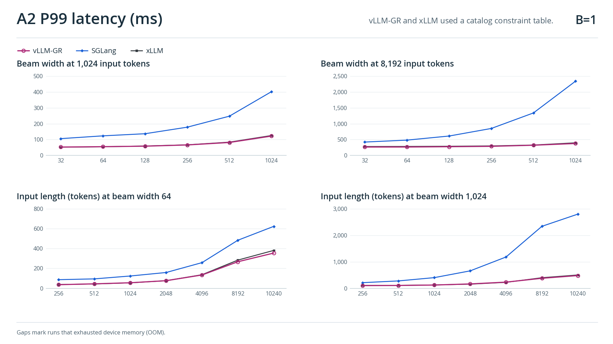
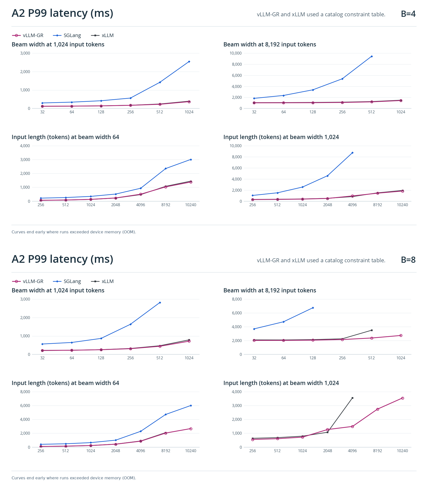
A5 · B=1、B=4 和 B=8
批量大小为 8 时，vLLM-GR 在束宽 128 和 256 下的 P99 分别为 128.2 毫秒和 151.7 毫秒。在两种总览束宽、全部三个批量大小下，它都取得图中各后端最低的 P99。
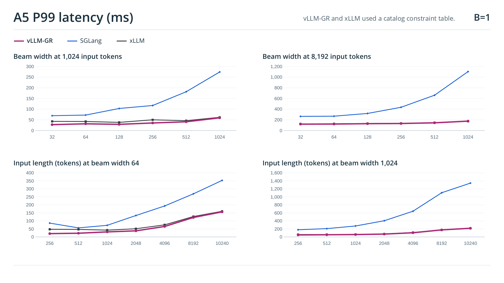
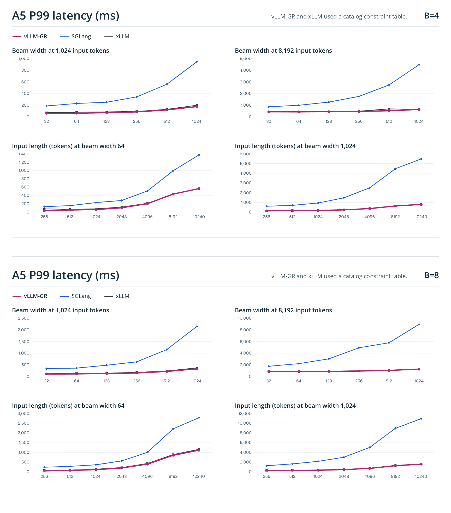
未来路线图
我们的目标是构建一个既能服务候选生成、也能服务排序的框架，覆盖从超长用户历史到宽束搜索的完整流程。
- 支持更多模型。 把候选评分扩展到 HSTU、MTGR 和 RankMixer，为 OneTrans 增加原生服务支持，并探索对总参数规模更大的推荐模型（包括混合专家 MoE 模型）的服务优化。
- 更灵活的束搜索。 探索价值感知的候选选择和额外的语义 ID 输出头；在不同设备上支持更深的 SID 层级，以及可变长度生成，使单个束能够在 EOS 处停止、释放其槽位与 KV，并接收新请求。
- 在线批处理与调度。 探索一种在线调度器，由它决定何时组成批次以及纳入哪些排队请求。这样，不同用户历史长度的请求可以共同运行，同时在过载时限制队列长度。将形状相近的批次分组，可以复用同一张已捕获的计算图，以更少的填充进行重放。
- 长历史与 KV 复用。 优化 10,000 个 token 以上历史的预填充，并探索结合线性注意力或稀疏注意力的束搜索。随着用户历史增长，在请求之间复用未变化前缀的 KV 块，避免重复预填充这些 token。
- 分布式推理与 KV 缓存。 探索分布式 KV 缓存，使服务实例能够复用同一节点或其他节点上另一设备的 KV 块，并评估两种环境中的模型分片和 KV 传输成本。
- 与上游 vLLM 更紧密地集成。 基于 vLLM 的引擎和平台接口，把上游在调度与 KV 缓存管理方面的改进带到推荐工作负载中。定期将 vLLM-GR 更新到较新的稳定版 vLLM，并在支持的设备上验证引擎正确性、推荐质量和服务性能。
快速开始
vLLM-GR 0.30.0 基于 vLLM 0.30.0 构建，支持 NVIDIA GPU 和昇腾 NPU。
安装
请根据加速器查阅对应安装指南：NVIDIA CUDA 或昇腾 NPU。
为生成式推荐模型提供服务
可以离线运行 OneRec-1.7B，也可以参考 HTTP 服务示例或面向 CUDA 的 gRPC 服务示例。
加入社区
如果你正在把其他推荐模型接入 vLLM-GR，请告诉我们该模型如何表示交互历史以及它预测什么。如果你要报告服务瓶颈，请提供模型、历史长度、束宽和硬件信息，以便其他人复现。GitHub 仓库 · 提交问题 · 贡献指南
致谢
感谢 InferMatrix 团队的 Hongsheng Liu 和 Han Zhang 最先提出让 vLLM 支持生成式推荐高性能推理的设想。也感谢 Inferact 的 Roger Wang 和 Zhipeng Wang 进行深入讨论，帮助塑造 vLLM-GR 的路线图与架构。
我们还要感谢以下团队和社区成员为 vLLM-GR 做出贡献，并分享大规模生产部署的经验与反馈：
- Inferact：Zhipeng Wang、Roger Wang
- InferMatrix Team：Han Zhang、Shucheng Zhang、Xiaodong Tian、Yunpeng Zhi、Yi Ding、Jierui Yu、Hongsheng Liu
- openPangu：Xinming Han、Zhiwei Yi、Mengyuan Ma、Yongxiang Feng
- TikTok-Global E-commerce：Bin Wang、Junye Long
- Data-Arch-China Commerce and Advertising-ML Infra：Haoran Ma、Wenqiang Zhou、Junwen Guo
- LingQuAI：Chunxu Jin、Wuping Liu